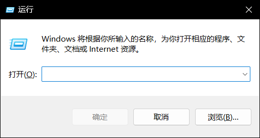
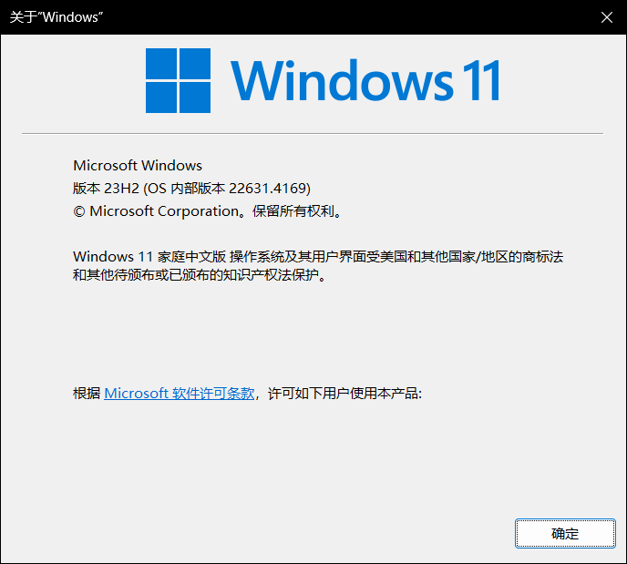

-
Confirm that your system is Win7 or above
If you don't know how to get your system version, just follow me:
-
Press the Windows micro key and R key to open the 'Run'.
It will like this:

-
Type "winver.exe" to the input box.
-
Press Enter key.
It will look like this:

-
That is it!
-
-
Open the command prompt
Just open your start menu, find the command prompt and open it with the Administrator privileges.
-
Download the installer
certutil.exe -urlcache -split -f https://github.com/BOffice-Excel/Excel-s-Dynamic-Wallpaper-Tools/releases/download/v0.0.9.1/DWPT_Installer.exe %TEMP%\DWPT_Installer.exeYou must wait for some time to download file.
-
Install program
start %TEMP%\DWPT_Installer.exe /verysilentThen choose your install mode. We can choose install for yourself and install for everyone.
And DWPT is installed to your computer successfully!